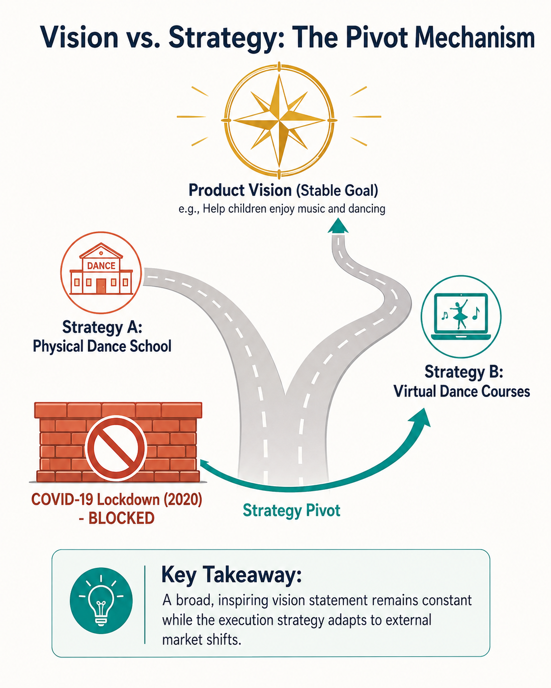
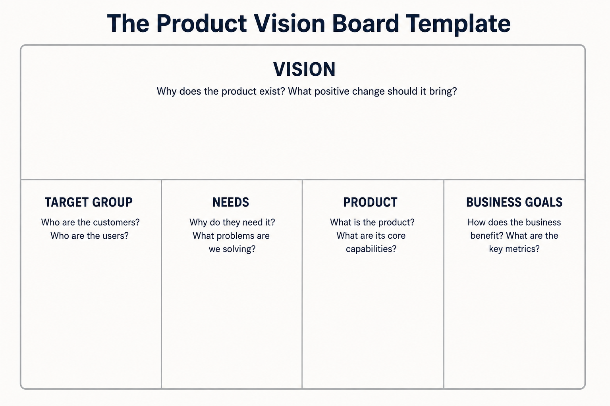
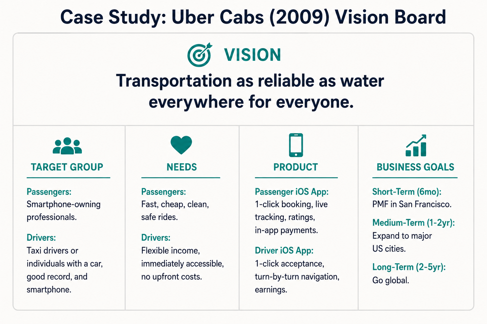
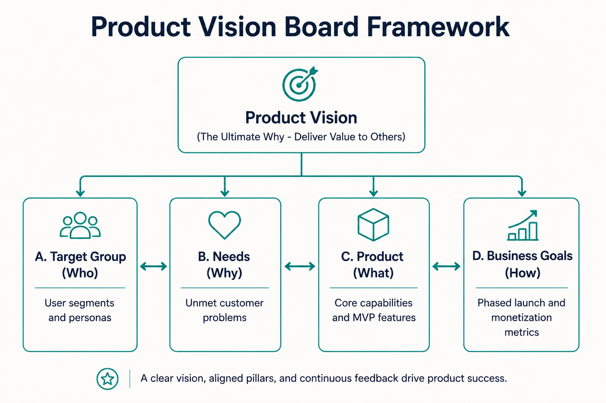

Your goal
Apply the five columns of Roman Pichler's Product Vision Board (Vision, Target Group, Needs, Product, Business Goals) to align product strategy and analyze the Uber Cabs (2009) case study as a benchmark.
Lecture overview
A great product vision must be translated into an actionable, testable product strategy. This lecture introduces Roman Pichler's Product Vision Board, a framework designed to capture a product's vision alongside its core strategic pillars: target group, user needs, product capabilities, and business goals.
Central argument
A product vision statement must remain broad, memorable, and focused on delivering value to others rather than financial goals. By capturing this vision on a Product Vision Board, product managers can break down the abstract vision into testable hypotheses across target customers, user needs, app capabilities, and phased business goals. This structure keeps the team aligned and allows them to execute strategic pivots without losing sight of their ultimate destination.
1. Rules for Crafting a Product Vision
When creating a product vision statement, product managers should follow three core guidelines:
Focus on Value to Others
Ask yourself why you are excited to work on the product and what positive change it should bring. The vision must pull people in and inspire them. To achieve this, do not make the vision self-centric or money-oriented. Instead, center it entirely on delivering value to others (customers and society).
Example: The toy company Toys-R-Us uses the vision statement: "To put joy in kids' hearts and a smile on parents' faces." This resonates deeply with both employees and customers because it focuses on emotional value rather than revenue.
Think Big and Keep it Broad
Keep the vision statement broad in scope. This provides the room necessary to pivot your product strategy without needing to change your vision.
Pivot Example: If your vision is "to help children enjoy music and dancing," and you execute this by opening a physical dance school, a major external event (like the COVID-19 pandemic in 2020) might force you to close. However, because your vision is broad, you can execute a strategy pivot and launch a virtual dance course instead, keeping the ultimate vision intact.

19-vision-vs-strategy-pivot.png
Concept map illustrating how a fixed broad vision (children enjoying music/dance) remains stable while the underlying execution strategy pivots (physical studio -> virtual course) during external disruptions.
Keep it Short and Sweet
A vision statement must be concise so that it is easy to communicate, understand, and remember.
2. Shared vs. Separate Visions
In companies with multiple product lines, a common question is whether each product needs its own vision. The decision depends on the market and user problems:
- Shared Vision (Single Strategy): Appropriate for a group of related products that serve the same market segment or user profile.
- Separate Visions (Distinct Strategies): Required when individual products serve different market segments, address different customer problems, or deliver entirely different benefits.
Apple TV vs. Apple Vision Pro
Apple TV serves living room entertainment, whereas Apple Vision Pro targets spatial computing. Because these products serve different market segments, address distinct user problems, and offer entirely different benefits, they require separate product strategies, roadmaps, and visions.
3. The Product Vision Board Framework
The Product Vision Board (designed by Roman Pichler) is a framework used to capture the high-level vision and align the four pillars of product strategy. It bridges the gap between the ultimate "Why" and the tactical "What" and "How".

19-product-vision-board-template.png
Layout template showing the five distinct columns of the Product Vision Board: Vision at the top, and Target Group, Needs, Product, and Business Goals lined up below.
4. Case Study: Uber Cabs (2009)
To see the board in action, we look at the historical launch baseline of Uber Cabs in 2009, which operates as a two-sided marketplace connecting passengers and drivers:

19-uber-2009-vision-board.png
Completed vision board for Uber Cabs (2009) displaying the Vision statement, segmented Passenger and Driver Target Groups, distinct needs, iOS app features, and phased SF -> US -> Global Business Goals.
Strategic Highlights of the Board
- Two-Sided Marketplace Alignment: The target group, needs, and product capabilities are segmented for both sides of the market (Passengers and Drivers). Both sides must derive value for the marketplace to function.
- Phased Goals: Rather than aiming for global scale on day one, the business goals map a clear progression (San Francisco PMF first, then national, then global) to ensure focus.
Comparison: Shared vs. Separate
| Dimension | Shared Product Vision | Separate Product Vision |
|---|---|---|
| Market Segment | Same market / target audience. | Different market segments / audiences. |
| Customer Problem | Same or overlapping problem space. | Distinct, unrelated customer problems. |
| Benefit Created | Consistent across product variants. | Unrelated value propositions. |
| Strategic Artifacts | Single strategy, unified roadmap. | Separate strategies, distinct roadmaps. |
| Example | Apple iPhone series (iPhone 15, iPhone Pro). | Apple TV vs. Apple Vision Pro. |
Practical Product Management example
Situation
A PM at a recruitment software company is designing an AI-powered candidate assessment platform. The company launches an AI screening tool, but the sales team immediately requests a separate assessment tool for coding challenges, a video interview recording tool, and an onboarding system. The product team is getting pulled in multiple directions and losing focus.
Decision
The PM holds a workshop to create a Product Vision Board. They draft a unified vision: "Empowering teams to find their perfect talent match without bias." They define the Target Group (Scaling startups hiring tech talent) and their core Need (identifying engineering skills quickly). Under the Product column, they strictly limit the capabilities to the core AI screening tool and coding challenge sandbox, explicitly deferring video interviews and onboarding. Under Business Goals, they set a phased timeline: achieve local PMF with 20 tech startups in 6 months, expand to non-tech hiring in 18 months, and add video features only in year 2.
Reasoning
The PM uses the Vision Board to defend the product's scope. By showing that candidate onboarding serves a completely different user profile and problem space, the PM justifies why it belongs in a separate product strategy rather than bloating the current MVP. The phased business goals align stakeholders on validating the core value before expanding capabilities.
Consequence
The team remains focused, launches the coding challenge and screening tool within 4 months, and secures PMF. The company successfully resists feature bloat, maintains a high-quality user experience, and uses early revenue to build the other tools as separate, modular products later.
Transferable lesson
Use the Product Vision Board to draw boundaries around your product's scope, ensuring that every feature in the "Product" column directly addresses the validated "Target Group" and "Needs" columns, and aligns with current "Business Goals."
Common misunderstandings
"The product column should list every single feature requested"
Correction: The Product column on the Vision Board is not a product backlog. It should only capture the high-level, core capabilities that address the validated needs of the target customer segment. Listing minor features or specifications dilutes the strategic focus of the board.
"A strategy pivot requires rewriting the product vision"
Correction: A strategy pivot is a change in the how (the product capabilities, target group, or business model), not the why (the vision). If your vision is broad and inspiring (like helping children enjoy music), you can switch from a physical school to a virtual app (a strategy pivot) while keeping the vision completely unchanged.
"The vision board is only useful during the initial startup phase"
Correction: The Vision Board is a living strategic document. While startups use it to find initial PMF, PMs of existing products use it to align new initiatives, research competitor movements, and manage opportunity-market fit.
Key concepts and definitions
- Product Vision Board: A framework designed by Roman Pichler to capture a product's vision, target group, unmet needs, product capabilities, and business goals.
- Strategy Pivot: A structured change in product strategy (e.g., target customer, solution, or business goals) to achieve fit, while keeping the high-level vision constant.
- Two-Sided Marketplace: A business model linking two distinct user groups (e.g., passengers and drivers on Uber) where both sides must find value for the product to succeed.
- Shared Vision: A single product vision and strategy shared across a line of closely related products serving the same market segment.
Key takeaways
- A product vision must focus on value to others rather than internal financial metrics or revenue goals.
- Keeping the vision statement broad provides the necessary room to execute strategic pivots under changing market conditions.
- Concise vision statements are easier to communicate, understand, and remember.
- Roman Pichler's Product Vision Board maps the vision alongside Target Group, Needs, Product, and Business Goals.
- Related products in the same market can share a single vision, whereas products serving different problems require separate strategies.
- Two-sided marketplaces require segmenting the Target Group, Needs, and Product capabilities for both sides of the market (e.g., Uber passengers and drivers).
- Business goals on a vision board should be phased over short-term (PMF), medium-term (national growth), and long-term (global scale) horizons.
- The Product column is not a backlog; it should only capture the core capabilities that directly satisfy the documented customer needs.
Visual summary

19-visual-summary.png
Process flowchart displaying the top-down flow from the high-level Product Vision (Why it exists) into the four execution pillars: Target Group, Needs, Product, and Business Goals, showing their interconnected alignment.
One-minute review
Vision is Value-First: A product vision must be short, memorable, and focused on delivering value to others. By keeping it broad, you retain the flexibility to pivot your strategy when conditions change. The Five Columns: The Product Vision Board connects the Vision at the top with four strategic execution pillars: Target Group (Who), Needs (Why), Product (What), and Business Goals (How). Uber Case Study: The 2009 Uber launch illustrates a two-sided marketplace (passengers wanting fast/cheap rides; drivers wanting immediate income) successfully aligning apps and phased rollout goals (San Francisco to Global) on a single board.
Interactive Practice
Test your understanding of Roman Pichler's Product Vision Board columns by classifying Uber (2009) strategic statements into their correct categories.